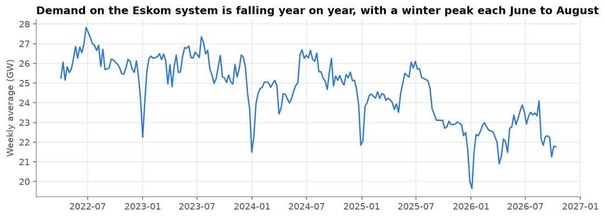
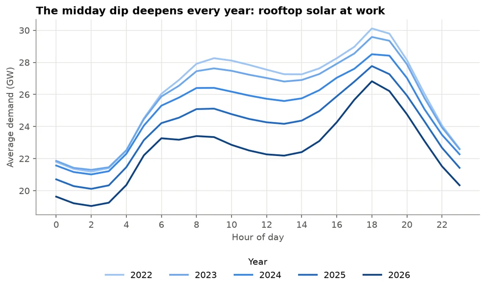
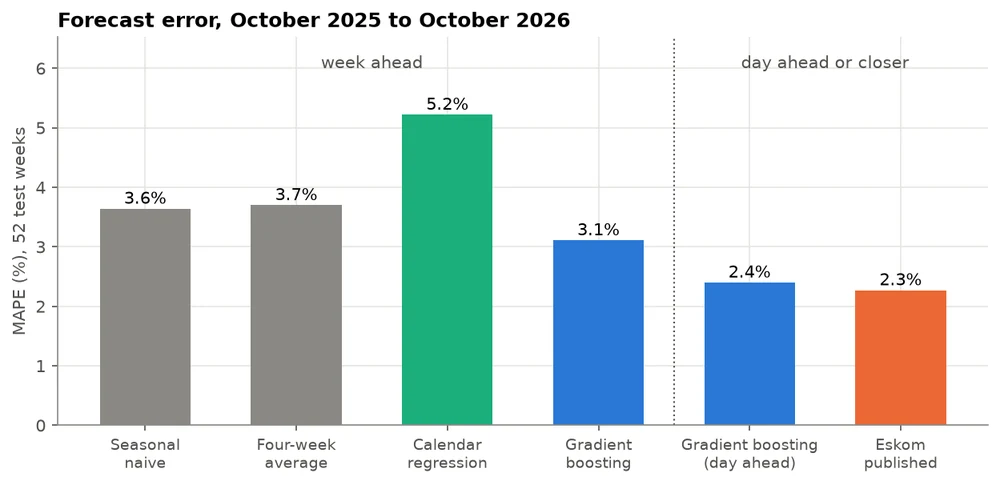
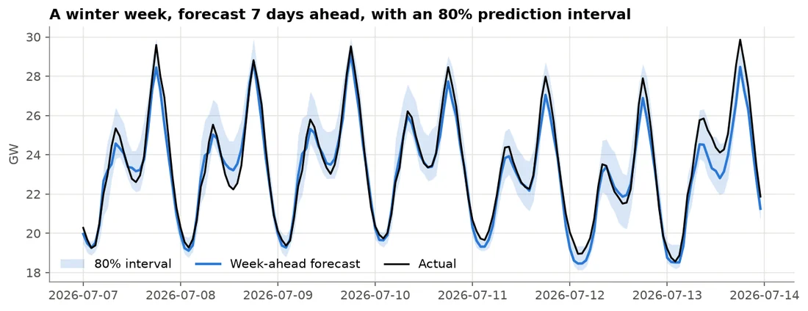
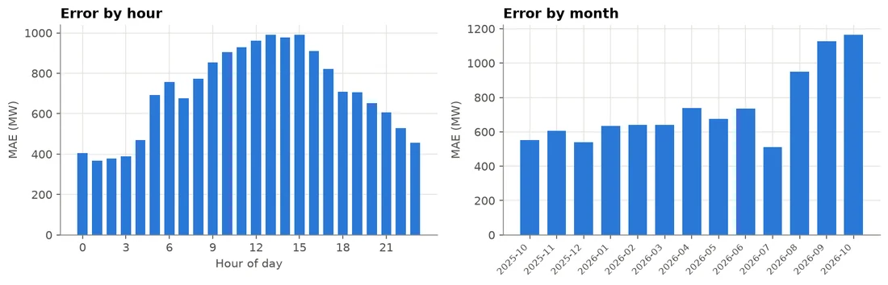

Forecasting · Case study
Eskom Demand Forecasting: How Much Electricity Will South Africa Need Next Week?
A week-ahead, hour-by-hour forecast of South Africa's electricity demand, built on 4.5 years of Eskom data, that beats the standard baselines and comes within 0.1 percentage points of Eskom's own published forecast at the day-ahead horizon, without weather data.
- 3.1%MAPE a week ahead, 15% better than “same as last week”
- 2.4%MAPE a day ahead, against Eskom's published 2.3%
- 52weeks of walk-forward testing
- Data
- Eskom Data Portal, hourly, April 2022 to October 2026 (39,600 hours)
- Methods
- Gradient boosting, ridge regression, seasonal baselines, calibrated prediction intervals
- Tools
- Python, pandas, scikit-learn, statsmodels
The problem
Eskom has to have enough generation ready to meet demand every hour. When demand is higher than planned, the control room runs expensive diesel turbines or cuts load; when it is lower, coal units stand by for nothing. A better forecast means less diesel, fewer emergencies and lower cost.
Question: how much electricity will South Africa need next week, hour by hour, and can a simple, transparent model match Eskom's own published forecast?
What the data shows

- Demand is falling: from about 26.1 GW in 2022 to about 22.5 GW in 2026, largely because of rooftop solar and private generation after years of load shedding.
- The midday dip deepens every year: the gap between 7pm and noon grew from 2.3 GW to 4.0 GW, South Africa's version of the “duck curve”.
- Strong cycles: two daily peaks, lower weekends and a winter peak, while public holidays cut daily demand by about 5%.

Approach
- Target and horizon: RSA Contracted Demand, forecast for the next 168 hours every week.
- Baselines first: “same hour last week” (3.64% MAPE) and a four-week average (3.70%) set the bar.
- Features known at forecast time: hour, day of week, month, South African public holidays and the days around them, a time trend, and demand 1 to 4 weeks earlier.
- Walk-forward validation: each of 52 test weeks is forecast by a model trained only on earlier data, retrained every 4 weeks, so nothing leaks from the future.
- Prediction intervals: quantile gradient boosting, calibrated on the 26 weeks before the test year.
Results
| Forecast | MAPE | MAE |
|---|---|---|
| Seasonal naive, week ahead | 3.64% | 818 MW |
| Calendar regression, week ahead | 5.22% | 1,161 MW |
| Gradient boosting, week ahead | 3.11% | 704 MW |
| Gradient boosting, day ahead | 2.40% | 540 MW |
| Eskom published forecast | 2.27% | 512 MW |
The calendar regression lost even to the baseline because a straight-line trend could not keep up with a decline that is speeding up (it over-forecast by almost 900 MW). Gradient boosting combines the calendar with recent demand to set the level.



Recommendation
- Plan winter evening-peak reserves from the upper band, plus a margin of a few hundred MW until the interval is recalibrated.
- Add solar irradiance and cloud-cover forecasts for midday, now the most uncertain period of the day.
- Review holidays and bridge days by hand, and add a bridge-day feature.
- Re-forecast daily: the day-ahead update is nearly as accurate as Eskom's own.
- Retrain monthly and monitor drift.
Limitations
- No weather data yet: temperature and cloud cover are the two biggest missing inputs.
- Eskom's forecast horizon is not published, so the comparison with Eskom is indicative.
- Intervals were slightly too narrow in the test year (74% coverage for an 80% band).
- Structural change from rooftop solar is ongoing, so the model needs regular retraining.
Interested in this work?
I'm looking for data scientist and data analyst roles in South Africa or remote.